This is a writeup for TryHeartMe on TryHackMe. The room gives us a small shop application and asks us to purchase the hidden product named Valenflag.
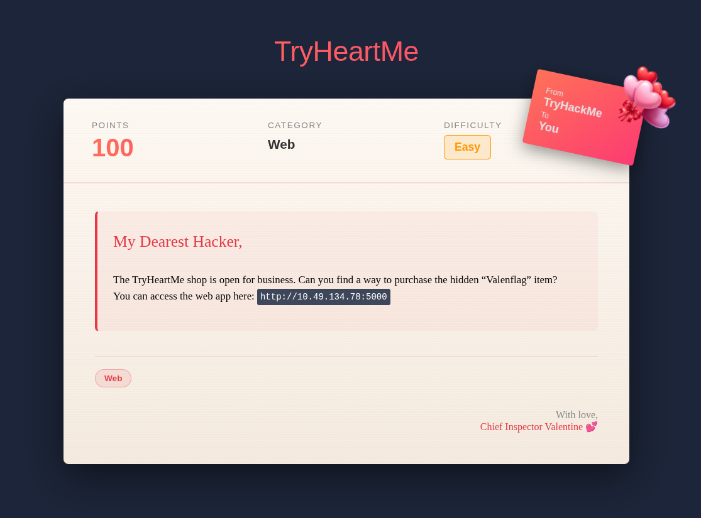
./01 First Look
After launching the instance, the web app opens to a Valentine's themed shop. The obvious first idea is to buy a visible product and tamper with the request so that the product name becomes Valenflag.
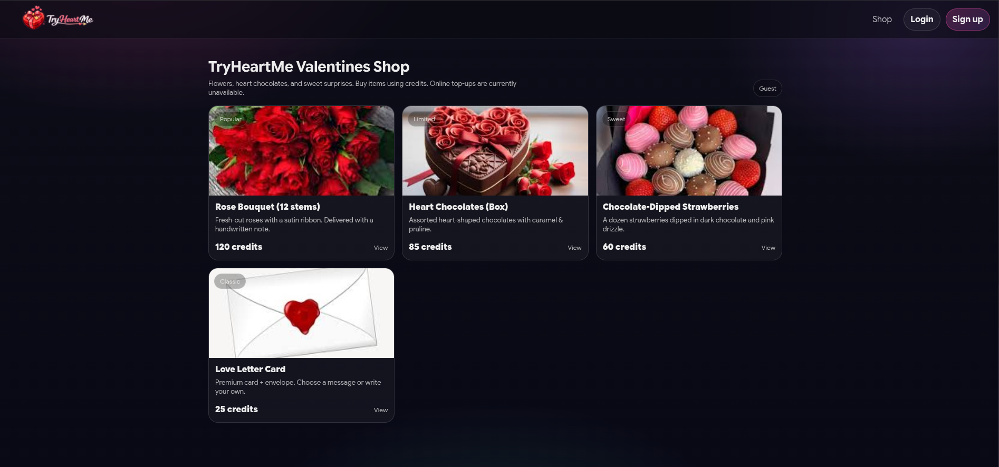
Trying to buy an item immediately shows that only logged-in users can purchase products, so the next step is to register an account and log in.
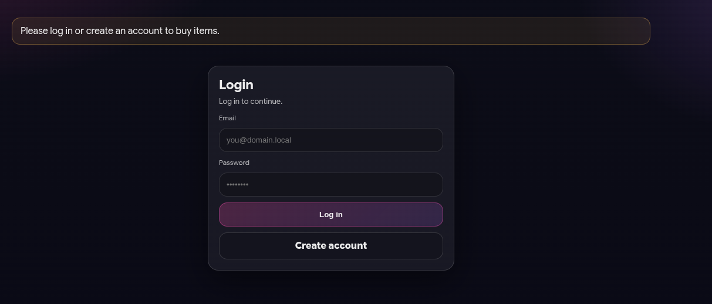
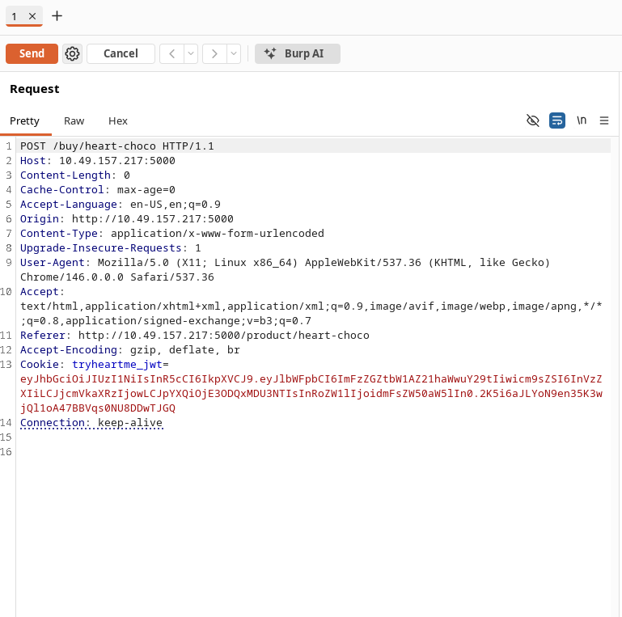
./02 Request Tampering
Once logged in, the session cookie stands out because it is a JWT. Before attacking the token, I first tried changing the purchase endpoint directly from a visible product to the hidden one:
POST /buy/heart-choco
POST /buy/Valenflag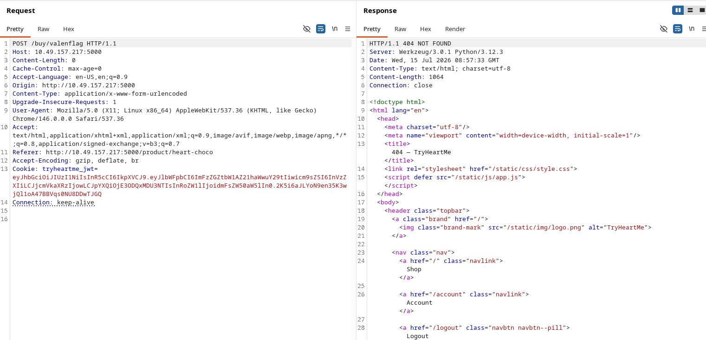
After testing several request parameter changes without success, I shifted focus to the JWT session token.
./03 Finding Admin Access
Since the app uses a role-bearing JWT, I checked for an admin area. The admin page exists, but the normal user session cannot access it.
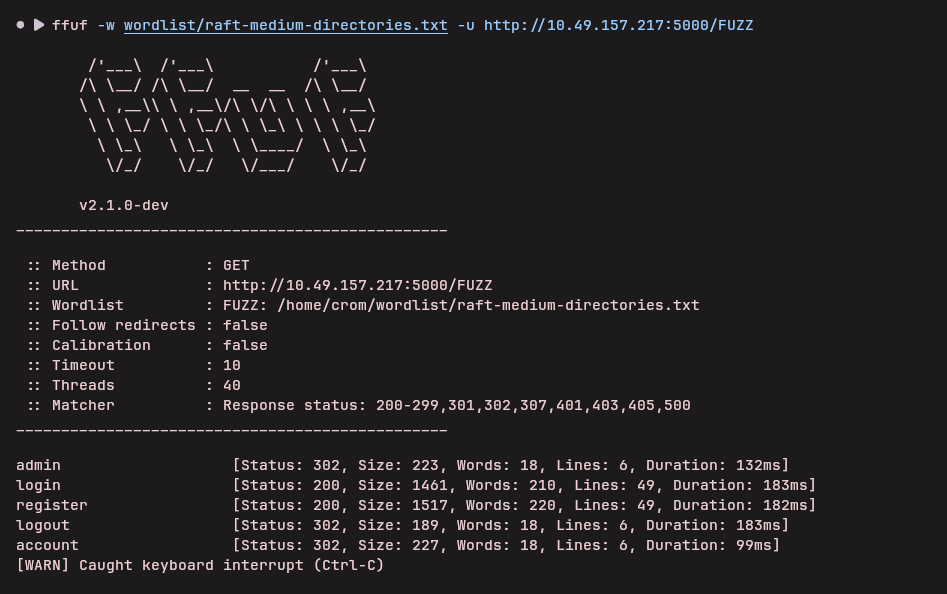
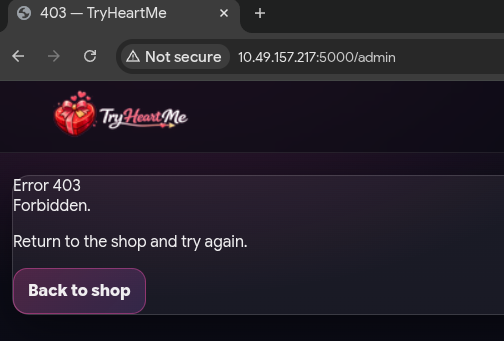
./04 Forging the JWT
The JWT payload includes a role claim. I changed the role from user to admin, encoded the token again, and sent the admin page request with the forged cookie.
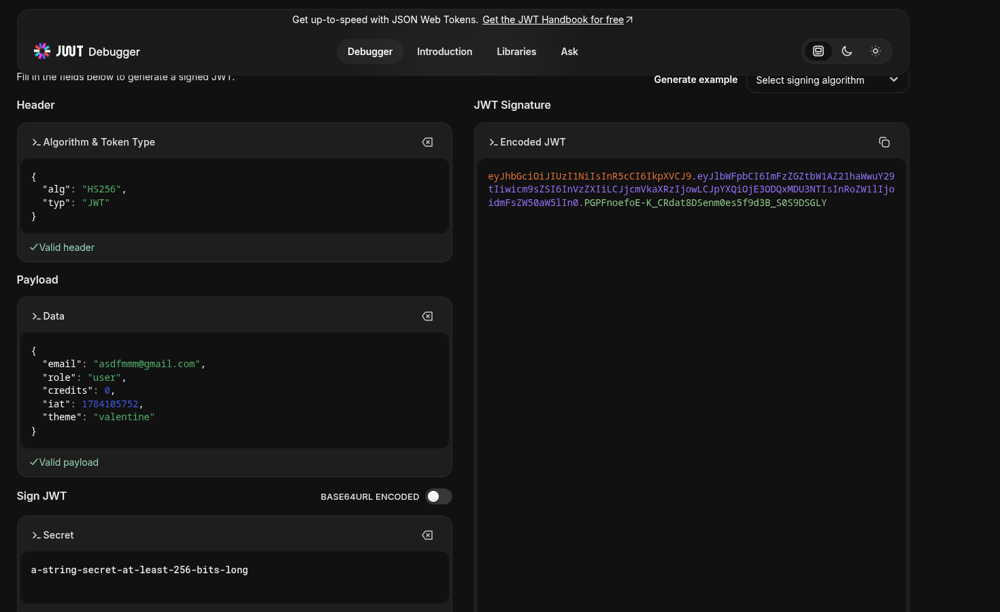
The forged token works, and the admin-only shop view becomes accessible.
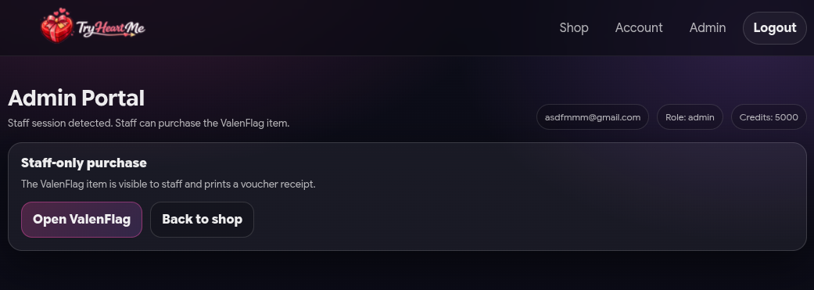
./05 Flag
With the forged admin JWT in place, buying the hidden item returns the flag.
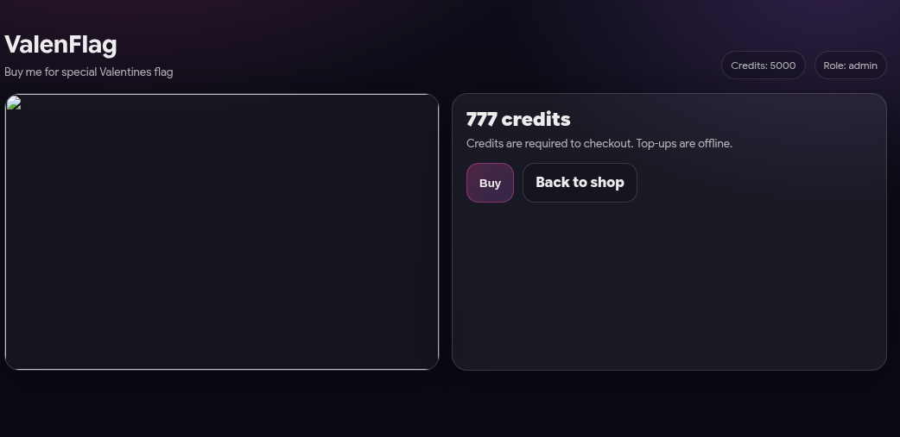
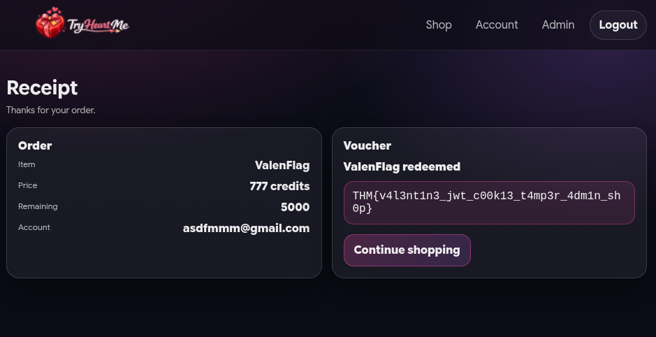
The issue is that the application trusts the role stored in the client-side JWT. Once the token is modified to claim admin access, the hidden product becomes purchasable.